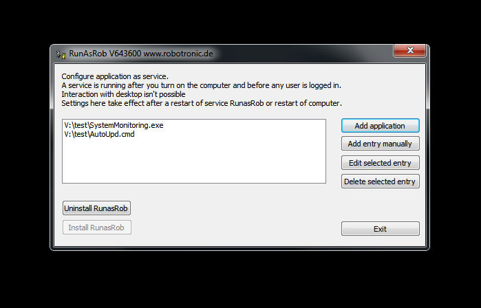

RunAsRob run as service
RunAsRob run as service
Run as Service start an application hidden in the background.
Run application as service after the system boot, before a user is logged in, under system account with the highest privileges.
RunAsService from RunAsRob is a small tool to run a program or a script like a batch file as windows service.
The method is easy to understand.
After you install the service of RunAsRob via the graphical user interface RunAsService.exe, you can add the application or script you want to run under service in windows.
At the next boot of the computer, the service of RunAsRob start and read in its registry path the applications, which are set by the GUI RunAsService to start as service and launch each application under service with system account.

Quick guide:
- Start RunAsService.exe as a local administrator.
- Press button >> Install RunAsRob <<.
- Select application you want to run as service by >> Add application <<.
- Finished.
- After each restart of system, now the application is running as service with system privileges, whether a user is logged in or not.
- Video example
Contact:
For any suggestions, errors, questions, specific requirements or adjustments please contact:
runas@robotronic.de
Licence:
RunasRob is only free for private use.
For companies and other organisations we deliver a licensed version, registered to the organisation name.
Order RunasRob >>>
Download RunasRob >>>
Date: 2019-10-13
Data protection
Imprint